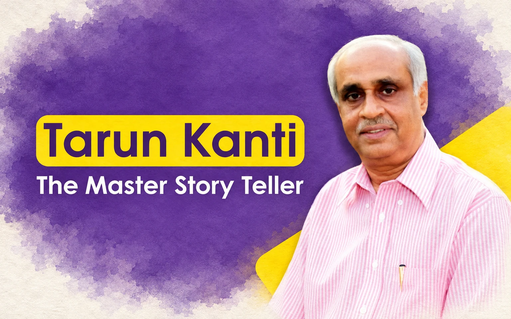

Missing Memories
Tarunkanti – The Master Story Teller

Tarun Kanti Mishra is a front-ranking fiction writer in contemporary Odia literature. Born in the year 1950 in a village in Anandpur sub-division in Keonjhar district, he had his schooling in Puri and Cuttack. He had his graduation with Economics Honours and Post-Graduation in Applied Economics from Utkal University. A brilliant student, Mr Mishra was interested to be a professor but ultimately joined IAS in 1975.
He got initiated into literature at an early age and his first short story was published in the leading literary journal Asantakali at fourteen when he was still in school. His first short story collection came out during his graduation days. He has a dozen short story collections and a few novels to his credit. Some of his works have been translated into various Indian languages. He bagged the Odisha Sahitya Academy award in 1997, the Central Sahitya Akademi award in 2019, and Sarala Award in 2001.
Mr Mishra is a prolific writer and a master storyteller, who knows how to captivate his readers with his lucid style and the uniqueness of his characters. His narrative style is in the line of his illustrious predecessors like Akhil Mohan Patnaik and Manoj Das or his contemporaries like Rama Chandra Behera and Padmaja Paul. In his stories, he tries to play with words, bringing out the poet in him in a profound way. The protagonists of his stories are very often victims of tragedies of life and it moves the readers by heart.
On the professional front, he held important key positions in the Odisha Government and was famous for his no-nonsense approach. He was the Administrator of the Dandakaranya Development Authority during his young days and was passionately involved in the resettlement of the refugees from Bangladesh. He had penned a beautiful novel on his experiences in the Dandakaranya project days.
He was the Secretary of some important departments like the Housing and Urban Development Department, Home Department, etc. He rose to become Development Commissioner cum Additional Chief Secretary and finally he became the Chief Secretary in 2009. After his superannuation in 2010, he joined as the Chief Information Commissioner of the State and relinquished office in 2015.
I was an avid reader of his short stories which are quite refreshing in themes and style. His narratives are very realistic and take the readers on a ride. One would feel that the characters are familiar with him. He will instantly develop an affinity with them. When I was in All India Radio, Cuttack in the early eighties my friend and classmate Chitta Ranjan Sahu who was then a lecturer in a private college and was a keen reader came to me one day with a manuscript. It was a radio play written by Ghana Bihari Moharana, himself a banker and short story writer and it was based on a short story by Tarunkanti Mishra on the tricky extramarital theme.
I was quite impressed by the storyline and the play. I gave it to veteran producer Dasarathi Das who liked it very much. He assured me to produce the radio play himself and I was sure that it would be a big hit. Soon thereafter I had to leave All India Radio and I am not sure whether it could materialize or not. But this incident brought me closer to the writings of Mr Mishra and I never missed his writings given a chance to read.
Although he was a very tough administrator and his exterior seemed hard at the surface he was very soft in his heart. His compassionate attitude made him a successful writer. Once when he was the Chief Secretary he came across a newspaper report that one of his teachers in BJB College did not get his final pension even after a decade of his superannuation. He immediately sent a note to the Secretary of the Higher Education Department ventilating his displeasure and asking for prompt action in the matter. Although it was finally resolved by my personal intervention, his sincere attempt to help out a teacher was praiseworthy.
I had attended many meetings under his chairmanship as Chief Secretary and I found him very forceful in his opinions. Once he got convinced of a particular issue he used to support it vehemently. When he was the Development Commissioner the cadre restructuring proposal of OAS and OFS cadres was under consideration and he openly advocated for maintaining the historic parity between both the cadres and it was finally accepted by the Government.
I had the opportunity to have a nice time with him when he was the Home Secretary and both of us had to attend a marriage ceremony of the son of a common friend in Bhubaneswar. The procession started from Xavier’s Square and reached Hotel Suryansh near Kalinga Hospital taking about two hours. I had to give him company and he was very cordial and open in his dealings with me. We discussed a lot of things from his writings to contemporary issues in administration.
He spoke from his heart without any inhibition. Although he looks shy outwardly once he starts talking he opens up gradually. I could then realize the true spirit of his personality. A few months ago he was being interviewed at a literary get-together in Hotel Mayfair organized by Prabha Foundation. Dr. Hiranmayee Mishra, a very young and powerful writer, interviewed him and at the end of the session, he took questions from the audience. He narrated his ordeals in life and how he had to face frequent transfers in his career at the cost of his children’s education.
He was very candid in admitting that many of his superiors in service never recognized him as a writer and that a writer has to face difficulties in balancing life between professional responsibilities and passion for writing. He is now a free bird and fully committed to his passion in life: literature.
Leave a thought
No account needed. Comments are reviewed before they appear. Your name and approved comment will be public.